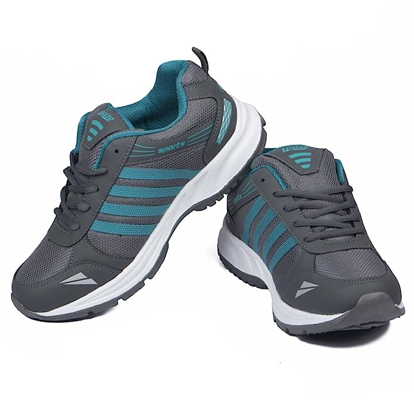
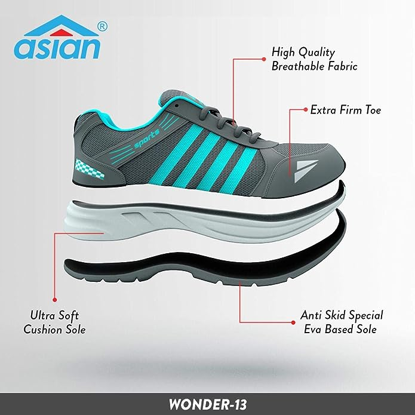
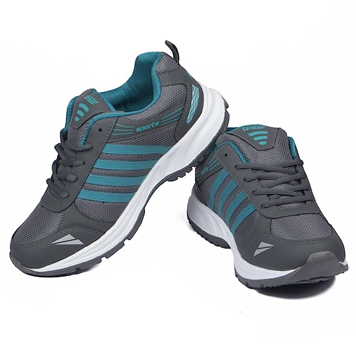
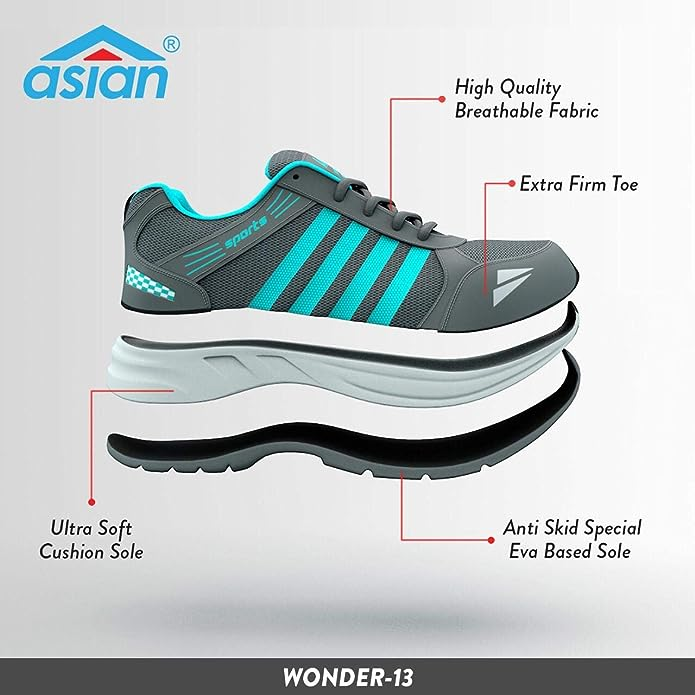

2.SPORTS SHOES
 



ASIAN Men's Wonder-13 Sports Running Shoes
About this item:
1. Sole: Ethylene Vinyl Acetate
2. Heel Height: 1 inches
3. Fit Type: Regular
4. Shoe Width: Medium
5. Sole Features: Height increasing non marking Eva sole made with light weight compound and orthopedic memory foam shoes which provides extra comfort to your feet with a perfect grip. Features Mega Pillow technology for added vacuum based air cushion under your heels.
6. Upper Features: New, Breathable Mesh upper which is easily washable, perfect for all seasons - winter, summer, designed to give you the most comfortable fitting. These are quick drying washable shoes which makes it easy for consumers to wash and sanitize them easily.